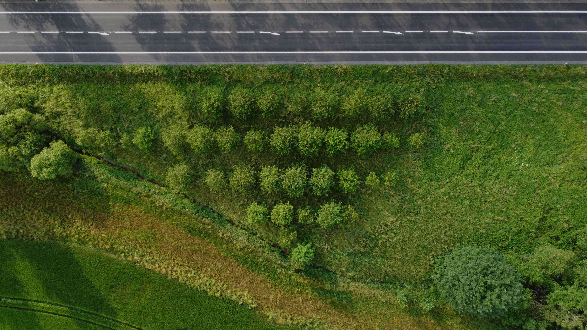
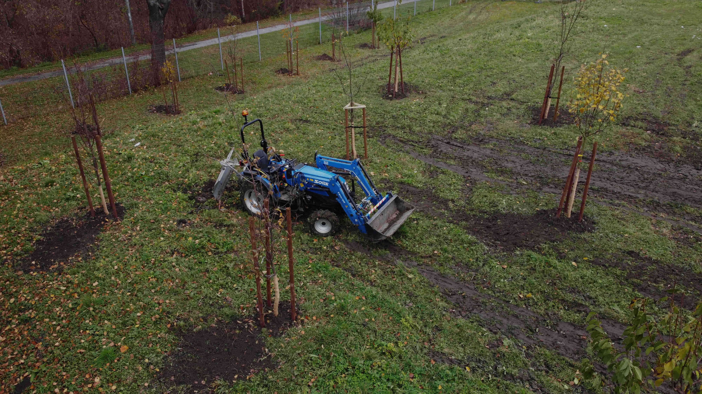
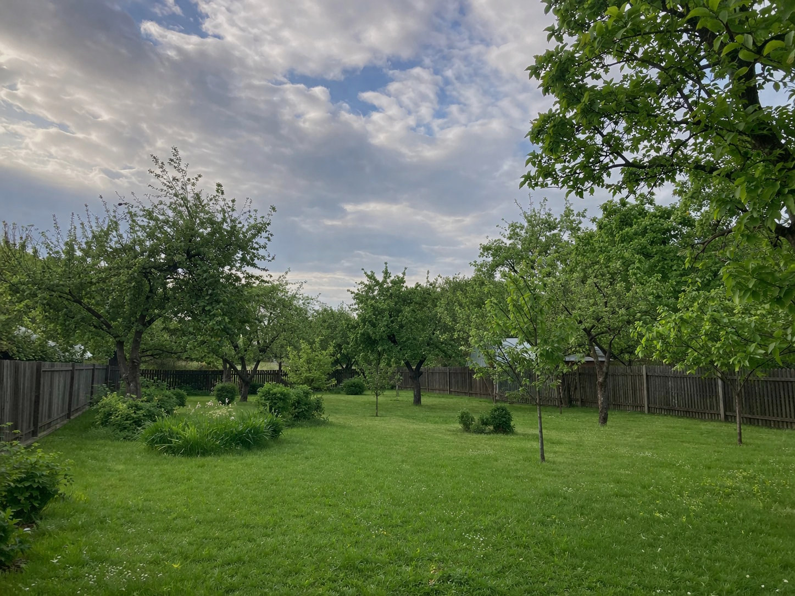
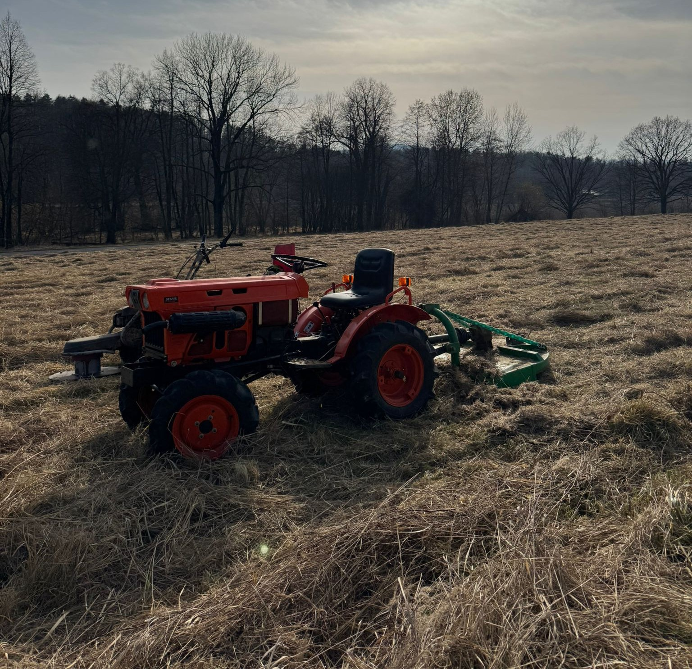
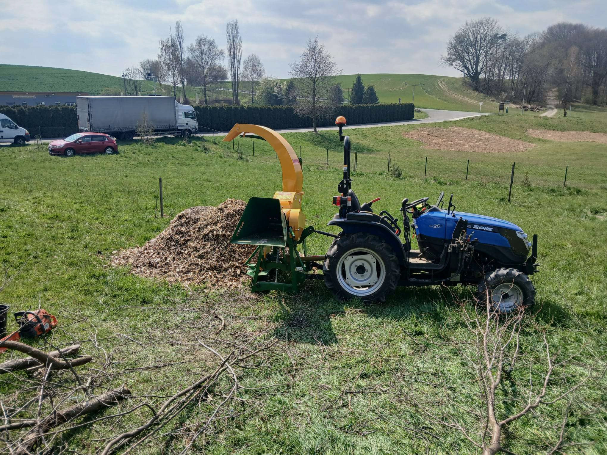

O nás
Celoročně se zabýváme širokým spektrem prací v oblasti komunálních služeb. Na trhu působíme už od roku 2005. Disponujeme kvalitní a prověřenou komunální technikou. Nabídku služeb naleznete v menu našich stránek vpravo. Dlouhodobě také spolupracujeme s dodavateli a specialisty v odvětví zemědělském, lesnickém a stavařském.
Pracujeme v Opavě, Ostravě, Frýdku Místku, Novém Jičíně, Bruntále, Havířově, Třinci, Českém Těšíně a dalších místech Moravskoslezského kraje.
Sídlíme na ulici B. Němcové 47 ve Staré kotelně v Opavě.
Mezi naše klienty patří firmy, soukromé osoby, SVJ. Pomáháme také při každodenních pracech seniorů, pro které jsme schopni poskytnout speciální ceny služeb.
Pracujeme od jara až do zimy 24 hodin denně!